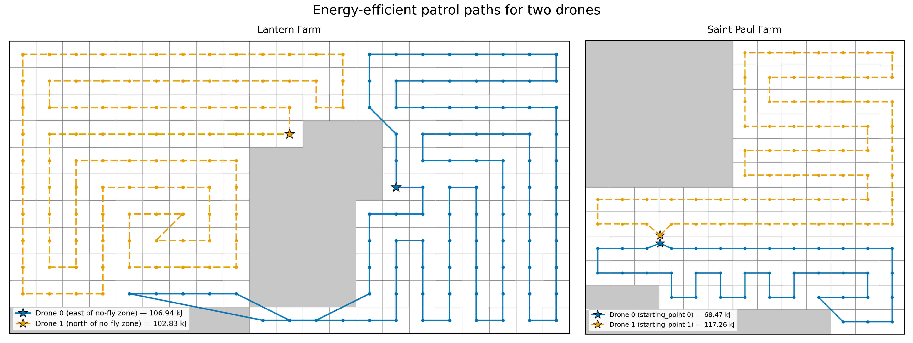
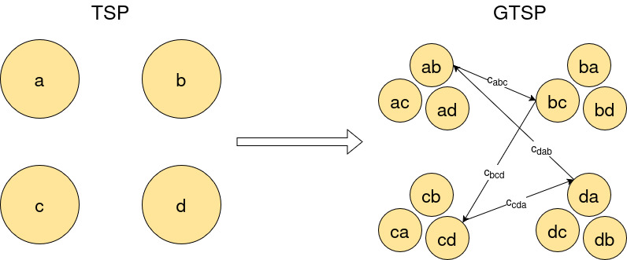

Drone Behavior Team
What We Do
We are responsible for planning the drone's movements and actions when searching a farm for deer and when deterring deer once they are detected. Patrols (or flight paths) are waypoint missions that are assigned to each drone by the base computer. To guarantee that the entire geofenced area, with the exception of no-fly zones, is scanned for deer, we overlay a grid across the area with grid cell sizes slightly smaller than the drone camera's ground footprint, then place a waypoint at the center of each grid cell.
Energy-Efficient Coverage Path Planning
Once waypoints are assigned to drones, our algorithm decides the order in which each drone will visit its waypoints to minimize the drone's energy expenditure during the mission. Our algorithm generates energy-efficient coverage paths that account for the energy costs of straight-line flight, turns, and flying in wind.


Deer Shepherding
Because the shepherding drones only know where deer are located if they are within the drones' line of sight, we need a way to represent their belief states—what they believe to be true about the world. When a deer is detected in a grid cell, the value of that cell is set to the probability of the computer vision model being correct. If the drones look away from a grid cell where they had detected a deer, then the deer probability value assigned to that grid cell diffuses slightly to the neighboring cells for every time step that the cell is unobserved. This embeds memory into their belief state so that they remember that an area where a deer was recently observed has some probability to still contain a deer.
Our approach uses multi-agent Deep-Q learning to train the shepherding policy used by all drones. We use a centralized learning architecture in which all shepherding drones update a single learned policy during training, with fully decentralized execution where each drone has its own copy of the policy.

Shepherding Algorithm Training Status
TrainingThe shepherding algorithm is still training and improving. Shepherding training metrics across 1.142 billion environmental steps are shown below. The vertical dotted lines indicate when we interrupted training to adjust parameters and reward weights before resuming where it left off.

If you're interested in learning the details of our implementation, please get in touch with us!